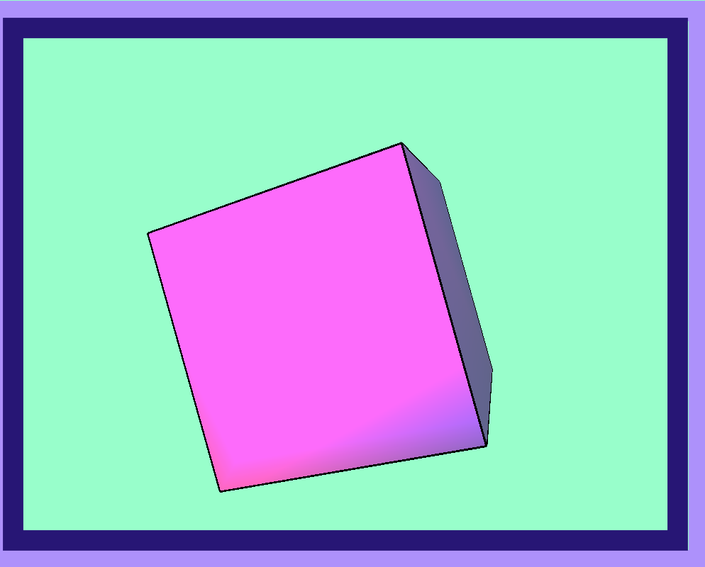

This selfie of me was created from adobe photoshop and the images in the background symbolism something to me.The first image was a key with a timepiece in it, what that means to me is that time is the key to life. All of us has the 24 hours but people still complain about their position and comparing themselves towards someone esle success when they can do the same. The "V" in the background is from one of my favorite designer clothing, Jabari Shelton American clothing designer had meaning to his clothing, most of his items he design has that "V" which stands for 'VLONE'. What Vlone stands for is Alone he used this to symbolize his brand because he beleives that you are always alone and the only person you have is yourself and to love yourself for that reasoning.Lastly the money in the background is a life necessity beacuse you cannot live in our society without it, money leads to power and control, its makes the word go around.

This vector image that I created originated from a selfie that I took and used in a previous project. This vector image I created has a lot of meaning within the colors and the how it is organized.So the pink in the background is the sky I choose pink because pink represents harmony and its a lovely color. Then the red mark under my eye is me craeting myself to look like an rapper who died, ASAP Yams, he had a red birth mark under his eye and the photo I tried to replicate he had a red hat and purple jacket.
The audio I made with audacity was not difficult but trying to be creative was the hard part and trying to be original. The story tells a guys waking up doing a regular morning routine then goes to a basketball game and then ends up getting hurt. I used around 7-8 different sound effects and to make the sounds realistic and try to let it be a intro to a movie. This story is based a true story that happened to me when I was younger.
CLICK LINK BELOW
10 SECOND ANIMATION